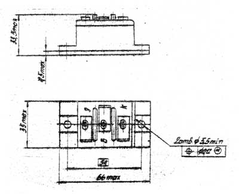

Модуль силовой полупроводниковый транзисторный на ток 80 А 2М5
1. Назначение
Модуль силовой полупроводниковый транзисторный типа n-p-n на ток 80 А предназначен для применения в ключевых схемах опытных образцов преобразователей.
2. Технические характеристики
2.1. Предельно допустимые значения параметров модулей должны соответствовать указанным в табл. 2.1.
Таблица 2.1
Наименование параметра, |
Норма |
Условия и режимы |
|
не менее |
не более |
||
| Постоянное напряжение коллектор-эмиттер при заданном обратном напряжении эмиттер-база, Uкэк, В |
- |
600, 800 |
Uэб = 3.0 В |
| Постоянное напряжение эмиттер-база при токе коллектора равном нулю, Uэб, В |
- |
7.0 |
Iк = 0 Tп = 25 0C |
| Граничное напряжение коллектор-эмиттер при заданном обратном напряжении эмиттер-база, Uкэк, гр., В |
500, 800 |
- |
Uэб = 3.0 В Iк изм. = 0.3 А Tп = 25 0C |
| Импульсный ток коллектора, Iки max, А | - |
80 |
tи = 30 мкс Q = 20 Tк <= 85 0C |
| Импульсный ток базы, Iби max, А | - |
15 |
tи = 30 мкс Q = 20 Tк <= 85 0C |
| Постоянный ток базы, Iб max, А | - |
10 |
Tк <= 85 0C |
| Постоянная рассеиваемая мощность, Pmax, Вт | - |
340 |
Tк = 25 0C |
| Постоянный ток коллектора, Iк max, А | - |
40 |
Tк <= 85 0C |
| Электрическая прочность изоляции корпуса, Uпр. из., В |
- |
2500 |
Tк = 25 0C |
| Длительный ток коллектора, Iкд max, А | - |
63 |
tи = 10 сек Tк <= 85 0C |
2.2. Модули подразделяются на классы в соответствии с табл. 2.2.
Таблица 2.2
Класс |
Граничное напряжение коллектор- |
Максимально допустимое постоянное |
5 8 |
500 800 |
600 800 |
2.3. Характеристики модулей должны соответствовать указанным в таблице 2.3.
Таблица 2.3
Наименование параметра, |
Норма |
Условия установления |
|
не менее |
не более |
||
| Напряжение насыщения коллектор-эмиттер, Uкэ нас., В |
- |
3.0 |
Iк = 63 А |
| Напряжение насыщения база-эмиттер, Uбэ нас., В |
- |
3.5 |
Iк = 63 А Iб = 2.0 А Tп = 25 0C |
| Статический коэффициент передачи тока, h21э |
100 (I |
- |
Uкэ = 5 В Iк = 40 А Tп = 25 0C |
| Обратный ток коллектор-эмиттер при заданном обратном напряжении эмиттер- база, Iкэх, мА |
- |
10 |
Uкэ = 600, 800 В Uэб = 3 В Tп = 125 0C |
| Обратный ток эмиттера, Iэбо, мА | - |
300 |
Uэб = 2 В Iк = 0, Tп = 25 0C |
| Время нарастания, tнр., мкс | - |
2.0 |
Uкэ = 400 В Iк = 40 А Iб нас. = 80/h21э Tп = 25 0C |
| Время рассасывания, tрас., мкс | - |
2.0 |
Uкэ = 400 В Iк = 40 А Iб нас. = 80/h21э Iб зап. = 400/h21э Tп = 25 0C |
| Время спада, tсп., мкс | - |
3.0 |
Uкэ = 400 В Iк = 40 А Iб нас. = 80/h21э Iб зап. = 400/h21э Tп = 25 0C |
| Импульсное прямое напряжение диода, Uпр. и., В |
- |
2.5 |
Iпр = 40 А Tп = 25 0C |
| Время обратного восстановления диода, tвос. обр., мкс |
- |
1.0 |
Iпр = 40 А dI/dt = 50 А/мкс Tп = 25 0C |
2.4. Модули допускают эксплуатацию в условиях воздействия на них механических и климатических факторов согласно табл. 2.4.
Таблица 2.4
| Наименование воздействующего фактора, единица измерения |
Значение воздействующего фактора |
| Механические воздействующие факторы: синусоидальная вибрация: диапазон частот, Гц амплитуда ускорения, м/с2 (g) Механический удар одиночного действия: пиковое ударное ускорение, м/с2 (g) длительность воздействия, мс Климатические внешние воздействующие факторы: атмосферное давление, кПа (мм. рт. ст.) Изменение температуры от повышенной предельной температуры до пониженной рабочей температуры, 0C Относительная влажность: повышенное (верхнее) значение, %, при температуре 35 0C |
|
2.5. Климатическое исполнение УХЛ 3.1 по ГОСТ 15150-69.
2.6. Масса модуля - не более 0.140 кг.
2.7. Содержание драгоценных материалов, г. (серебро) - 0.0176.
2.8. Общий вид, габаритные и установочные размеры модуля приведены в приложении.
3. Указания по монтажу и эксплуатации
3.1. Для работы модуль устанавливается на охладитель, обеспечивающий такой температурный режим, при котором температура перехода не превышает максимально допустимую. Охлаждение модуля - естественное.
3.2. Крепление модуля должно обеспечивать надежный тепловой контакт, контактные поверхности рекомендуется покрывать тонким слоем теплопроводной смазки, например, пастой КПТ-8 ГОСТ 19783-74.
3.3. Не допускается совмещение предельно допустимых электрических режимов эксплуатации.
3.4. При температуре корпуса свыше 50 0C
максимально допустимая мощность рассеивания определяется по формуле:
Pmax = (150 - Tк)/0.37,
где Tк - температура корпуса.
3.5. В процессе монтажа модулей в схему механические и тепловые воздействия на них не должны превышать значений, указанных в табл. 2.4.
3.6. Отгибка шин не допускается.
3.7. Модули крепить к охладителю винтами М5 с крутящим моментом (2 + 0.2) Н ∙ м.
3.8. Крепление токовыводов к шинам модуля винтами М4 с крутящим моментом (1.2 + 0.22) Н ∙ м.
4. Комплектность
4.1. Модули поставляются без охладителей.
4.2. В каждой партии модулей, поставляемых в один адрес, прикладывают паспорт.
4.3. В комплект поставки входят:
1) модуль;
2) винт В.М4-6 q х8.56.016 ГОСТ 17473-80 - 3 шт.;
3) шайба 4 65Г 016 ГОСТ 6402-70 - 3 шт.;
4) шайба 4.01.08 кп.016 ГОСТ 11371-78 - 3 шт.
5. Свидетельство о приемке
Модуль силовой полупроводниковый транзисторный соответствует техническим условиям ИЖУК. 435724.001-01 ТУ.
ПО "Электромодуль" ВЦЗ-13
Общий вид. Габаритные и установочные размеры модуля

21.06.2010
Альтернативные источники
энергии
Компьютеры и
Интернет
Магнитные поля
Механотронные системы
Перспективные
разработки
Электроника и технология